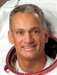

Lyndon B. Johnson Space Center
Houston, Texas 77058
|
National Aeronautics and Space Administration Lyndon B. Johnson Space Center Houston, Texas 77058 |
 |
Biographical Data |
||
JOHN D. OLIVAS (Ph.D., P.E.) "DANNY” PERSONAL DATA: Born in North Hollywood, California, 1966, and raised in El Paso, Texas. Married to the former Marie Schwarzkopf, also from El Paso, Texas. They have 5 children. Recreational interests include running, weightlifting, hunting, fishing and surfing. EDUCATION: Graduate of Burges High School, El Paso, Texas; received a bachelor of science degree in mechanical engineering from the University of Texas-El Paso; a masters of science degree in mechanical engineering from the University of Houston and a doctorate in mechanical engineering and materials science from Rice University. AWARDS: Six U.S. Patents; Four NASA Class One Tech Brief Awards; Five JPL-California Institute of Technology Novel Technology Recognitions; The University of Texas-El Paso Distinguished Alumnus, HENAAC Most Promising Engineer, McDonald’s Hispanos Triunfadores Life Time Achievement Award, NASA ASEE Summer Faculty Fellowship Award, Dow Life Saving Award. EXPERIENCE: After graduating with his undergraduate degree, Olivas worked for the Dow Chemical Company as a mechanical/materials engineer responsible for performing equipment stress/failure analysis for the operating facilities. Upon completing his master's degree, Olivas pursued his doctorate while supporting engine coating evaluations for C-5 maintenance operations at Kelly Air Force Base. He also supported the Crew and Thermal Systems Directorate at NASA Johnson Space Center, evaluating materials for application to the next generation space suits. Upon completing his doctorate, he received a senior research engineer position at the Jet Propulsion Laboratory (JPL) and worked in the development of tools and methodologies for nondestructively evaluating microelectronics and structural materials subjected to space environments. He was promoted to Program Manager of the JPL Advanced Interconnect and Manufacturing Assurance Program, aimed at evaluating the reliability and susceptibility of state-of-the-art microelectronics for use in future NASA projects. Throughout his career, he has authored and presented numerous papers at technical conferences and in scientific journals. NASA EXPERIENCE: NASA selected Olivas in 1998. Astronaut Training included orientation briefings and tours, numerous scientific and technical briefings, intensive instruction in Shuttle and International Space Station systems, physiological training and ground school to prepare for T-38 flight training, as well as learning water and wilderness survival techniques. From 1999 to 2002, he was assigned technical responsibilities within the Robotics Branch as lead for the Special Purpose Dexterous Manipulator Robot and the Mobile Transporter. From 2002 to 2005 he was assigned to the EVA Branch and supported the research effort focused on developing materials, tools and techniques to perform on-orbit shuttle repair. In 2006, he served as lead of the Hardware Integration Section of the Space Station Branch, responsible for ensuring proper configuration and integration of future station modules and visiting vehicles. In 2007 he flew on STS-117 logging 336 hours in space including over 14 EVA hours. In 2008 he was assigned to the Capsule Communicator (CAPCOM) Branch that is responsible for all interface with the flight control team at Mission Control in Houston and the on-orbit STS and ISS crews. In 2009 he served aboard STS-128 and has a cumulative total of over 668 hours in space and over 34 EVA hours. Olivas retired from NASA on May 25, 2010. SPACE FLIGHT EXPERIENCE: STS-117 Atlantis (June 8-22, 2007) was the 118th Shuttle mission and the 21st mission to visit the International Space Station, delivering the second starboard truss segment, the third set of U.S. solar arrays, batteries and associated equipment. The mission also entailed the first ever on-orbit EVA repair to the Space Shuttle, Atlantis. During two spacewalks, Olivas accumulated 14 hours and 13 mins of EVA experience. The mission also delivered and returned with an expedition crew member. STS-117 returned to land at Edwards Air Force Base, California, having traveled more than 5.8 million miles in 13-day, 20 hours and 20 minutes. STS-128 Discovery (August 28 to September 11, 2009) was the 128th Shuttle mission and the 30th mission to the International Space Station. While at the orbital outpost, the STS-128 crew rotated an expedition crewmember, attached the Leonardo Multi-Purpose Logistics Module (MPLM), and transferred over 18,000 pounds of supplies and equipment to the station. During three spacewalks,Olivas accumulated 20 hours and 15 mins of EVA experience. The STS-128 mission was accomplished in 217 orbits of the Earth, traveling over 5.7 million miles in 332 hours and 53 minutes and returned to land at Edwards Air Force Base, California. JUNE 2010
NASA ASTRONAUT (FORMER)